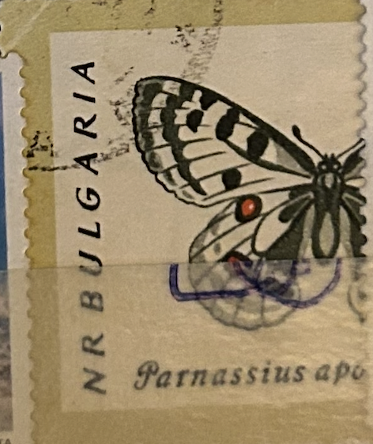
| SOURCE | TITLE| IMAGE MATCH | click to source page |
| HipStamp | Bulgaria 1962 Sc#1238, SG1337 1s Butterfly Parnassius apollo CTO. | Europe - Bulgaria, General Issue Stamp / HipStamp | 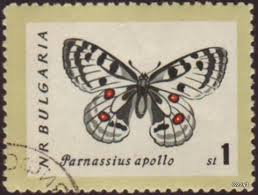 |
| eBay | Parnassius Apollo | eBay | 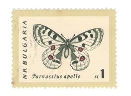 |
| CollectorBazar | Bulgaria Butterfly Theme Stamp Used PC50231 | 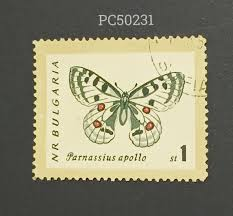 |
| eBay | WORLD STAMP LOT BUTTERFLY FLOWER ANTIQUE THEME VINTAGE COLLECTOR BULGARIA RUSSIA | eBay | 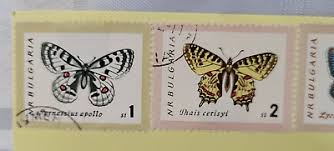 |
| eBay | Rare Butterfly for sale | eBay | 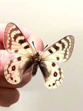 |
| Dreamstime.com | Selo Postal Impresso Na Bulgária Mostra Borboletas Apollo Parnassius Apollo Série 1962 Cerca De 1962 Fotografia Editorial - Imagem de inseto, impresso: 197165607 | 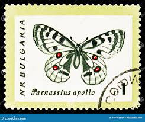 |
| iStock | Close Up Of Liberian Post Stamp Stock Illustration - Download Image Now - Animal Body Part, Animal Wing, Butterfly - Insect - iStock | 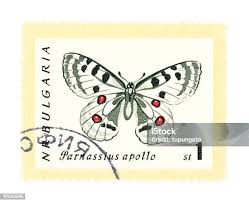 |
| Dreamstime.com | Stamp Printed in Yugoslavia Shows Butterfly Editorial Stock Image - Image of series, philately: 85960629 | 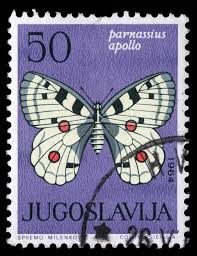 |
| Firecracker labels | 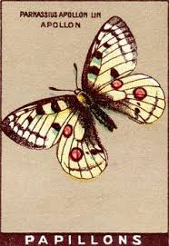 | |
| eBay | 1962 Bulgaria CTO Block: Butterflies (Parnassius apollo) | eBay | 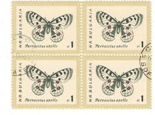 |
| eBay | Parnassius Butterfly for sale | eBay | 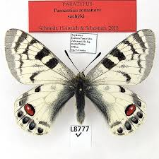 |
| philatelicmarket.com | пощенски марки Пеперуди. bulgaria 1962 | 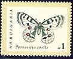 |
| Tatertots and Jello | Botanical Art Focal Shelves with 6 free butterfly and botanical printables! | 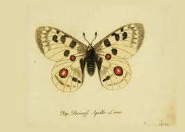 |
| Apollo butterfly from "The book of butterflies, sphinxes, and moths: illustrated by ninety-six engravings coloured after nature" by Captain Thomas Brown, 1832. From Milwaukee Public Library's Rare Book Collection @mplspecialcollections ... | 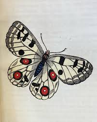 | |
| eBay | BRD FRG #Mi1517 MNH 1991 Apollo Parnassius Apollo [B710 YT1349 SG2366] | eBay | 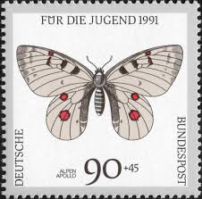 |
| Dreamstime.com | Charltonius Stock Photos - Free & Royalty-Free Stock Photos from Dreamstime | 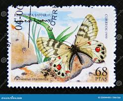 |
| HipStamp | Korea Stamp:1989-Sc#2827-Colorful Beautiful Lovely Butterfly-Mnh S/S-Vf | Asia - North Korea, General Issue Stamp / HipStamp | 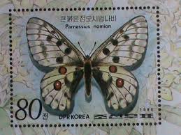 |
| Todocolección | cromo mariposa donuts nº 12 parnaso apolo parna - Buy Antique stickers on todocoleccion | 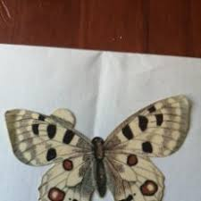 |
| eBay | BUTTERFLY/MOTH/MOUNTED Real Framed China Beautiful PARNASSIUS ORLEANS | eBay | 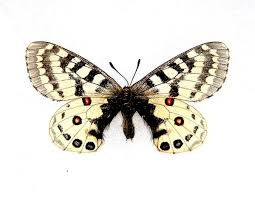 |
| Several **Parnassius autocrator from Tajikistan** have been listed on eBay ! See here in the Top 100 Insect Auctions : https://www.collector-secret.com/top-insect-auctions and many other Parnassius, Papilio, Ornithoptera for collectors | 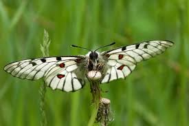 | |
| eBay | s5614/ Germany Poster Stamp Label # Apollo Butterfly | eBay | 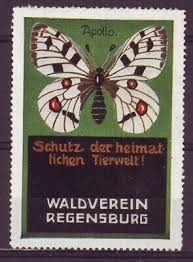 |
| eBay | Butterflies Stamp Coenonympha Pamphilus Parnassius Apollo S/S MNH #3626 / Bl.940 | eBay | 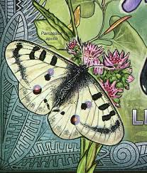 |
| Etsy | Real White Apollo Butterfly Framed Taxidermy - Parnassius Clodius Pseudogallatinus - Female - Etsy | 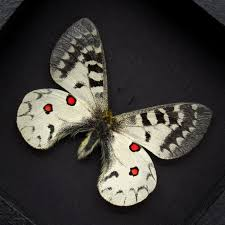 |
| Profil de Elizabetha Bonica (aniquilla) | Pinterest | 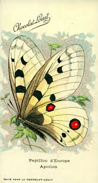 | |
| Pascal Vendredi Miallier (@pascalmiallier) • Instagram photos and videos | 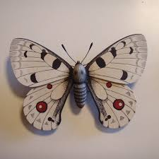 | |
| biomes.be | Parnassius cardinal M – Biomes | 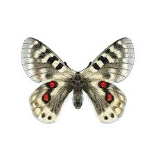 |
| John Derian | Pocket Mirrors, Pins, Magnets & Bottle Openers | 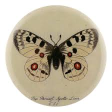 |
| Adi apollon — Vikipediya | 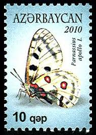 | |
| Todocolección | cromo mariposa donuts nº 12 parnaso apolo parna - Compra venta en todocoleccion | 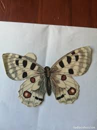 |
| swallowtails.net | P_staudingeri | 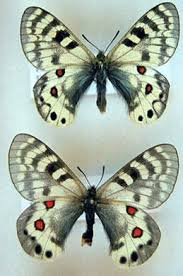 |
| Wikimedia.org | File:F Nemos Old Book Art Parnassius apollo.jpg - Wikimedia Commons | 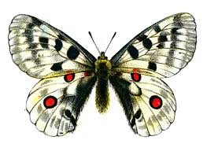 |
| Betts Ecology | Some Interesting Species of Sospel and its Environs near Dr Betts' Research Office | 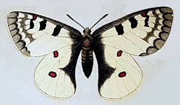 |
| Colorado Front Range Butterflies | Rocky Mountain Parnassian | Colorado Front Range Butterflies | 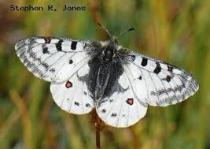 |
| Shutterstock | Antiopa do vanessa: 88 imagens, fotos e ilustrações stock livres de direitos | Shutterstock | 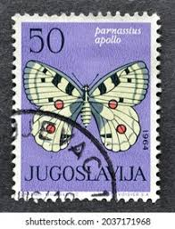 |
| eBay | Greece Butterflies Shells & Fishes 1981 MNH Cockies Parrot fishes Collias Hyale | eBay | 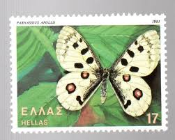 |
| uraic.ru | Аполлон феб | 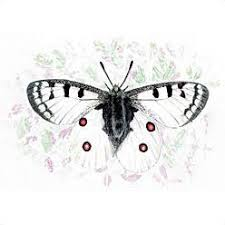 |
| Insecta.pro | Insects photos at Insecta.pro gallery | 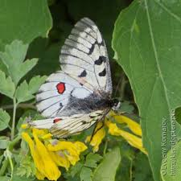 |
| astrolehrbuch.de | Bunte Welt der Schmetterlinge - Tagschmetterlinge | 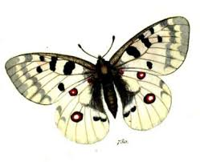 |
| oldantiqueprints.com | Antique Prints & Drawings | Butterfly - Parnassius | Chromolithography | 1911 | 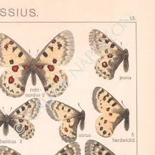 |
| A. coon coon pair (Java Indonésie) | 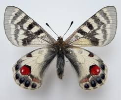 | |
| swallowtails.net | P_stenosemus | 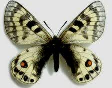 |
| dthecuador.com | 蝶標本 チャールトンウスバ ペア | 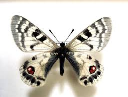 |
| Media Storehouse | Mountain Apollo, Small Apollo and Clouded Apollo Print 1864. Art Prints, Posters & Puzzles from Mary Evans | 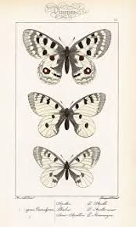 |
| Zobodat | 1804 from Tian-Shan and Alai. Part 1: , 1901 | 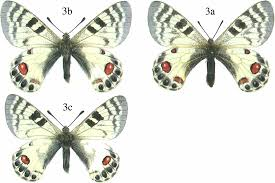 |
| The pictures of these butterflies were taken at the Charlotte Rhoades Park and Butterfly Garden. Sometimes you just gotta stand in front of the mirror and remind yourself that you are fearfully | 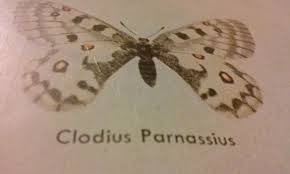 | |
| Zobodat | Notes on Parnassius charltonius vaporosus AVINOV, 1913 | 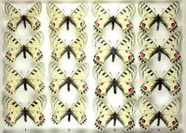 |
| Yr (syr5139) – Profile | Pinterest | 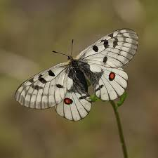 | |
| Dreamstime.com | Apollo or Mountain Apollo Parnassius Apollo, Hand Painted Watercolor Illustration with Inscription Stock Illustration - Illustration of invertebrate, isolated: 141317615 | 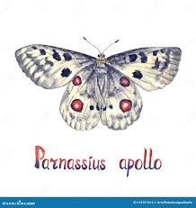 |
| Parc national des Pyrénées | PNP-dep12v-Parc National-AN-47538.indd | 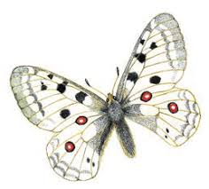 |
| Parnassius sp. identified in Weichang, Hebei | ||
| RusF.ru | Архив БВИ: Систематика: Parnassius | |
| Институт цитологии и генетики СО РАН | АЛТАЙ | |
| eBay | Monaco #YT809 MNH 1970 Anniv Animal Protection Apollo [760] | eBay | |
| Zobodat | from Kyrghyz Kashgaria | |
| Carousell Malaysia | Insect For Sale | Stamps & Prints | Carousell Malaysia | |
| 20MegsFree | Rarities II | |
| Etsy | Vintage Butterfly Prints - Set of 4 Restored Botanical Illustrations. - Etsy | |
| eBay | 1963 Vintage PROCHAZKA BUTTERFLY "APOLLO & SMALL THAIS" COLOR offset Lithograph | eBay | |
| ResearchGate | Butterflies of the subfamily Parnassiinae. (a) Parnassius charltonius.... | Download Scientific Diagram |
{kind=link}